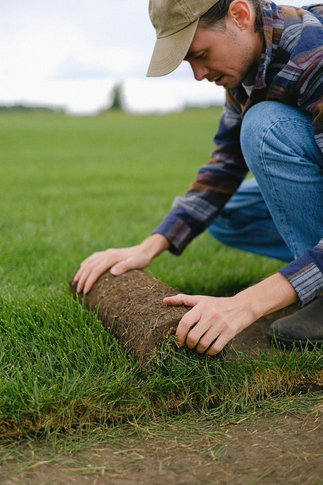

Création et Entretien de Jardin

Depuis 1998, nous vous accompagnons dans la création, la conception et l’entretien de vos espaces verts. De l’aménagement judicieux des zones et différents espaces, au choix des espèces, l’installation de l’arrosage, jusqu’à la plantation et l’entretien, nous intervenons et nous nous occupons de toutes les étapes.
Conseils pour un Jardin Bien Entretenu
- Arrosez tôt le matin ou en soirée pour éviter l'évaporation.
- Taillez régulièrement vos plantes pour favoriser leur croissance.
- Utilisez du paillis pour conserver l'humidité et réduire les mauvaises herbes.
- Alternez les cultures pour préserver la richesse du sol.
Conseils pour un Jardin Créatif

- Mélangez différentes variétés de plantes pour un effet visuel unique.
- Ajoutez des éléments décoratifs comme des pierres, des fontaines ou des lanternes.
- Utilisez des pots colorés et des structures en bois pour un style naturel.
- Expérimentez avec des plantes aromatiques pour allier esthétique et utilité.